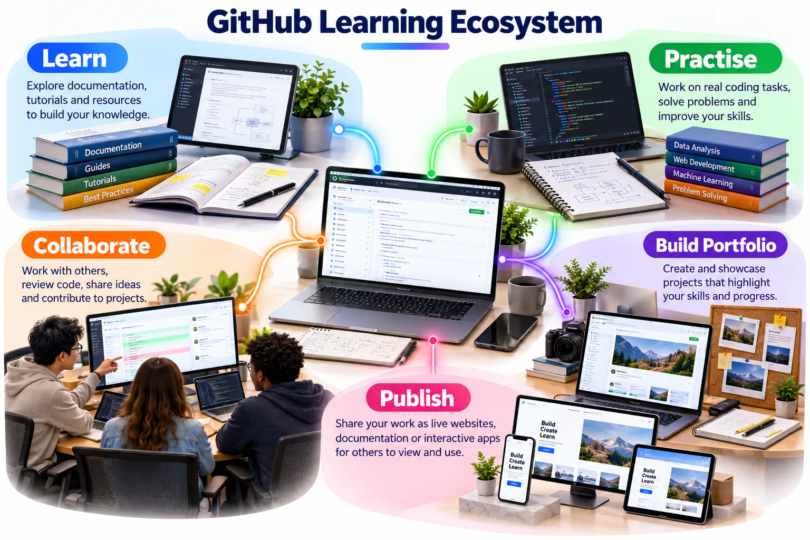
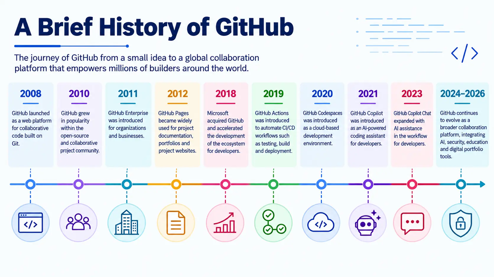
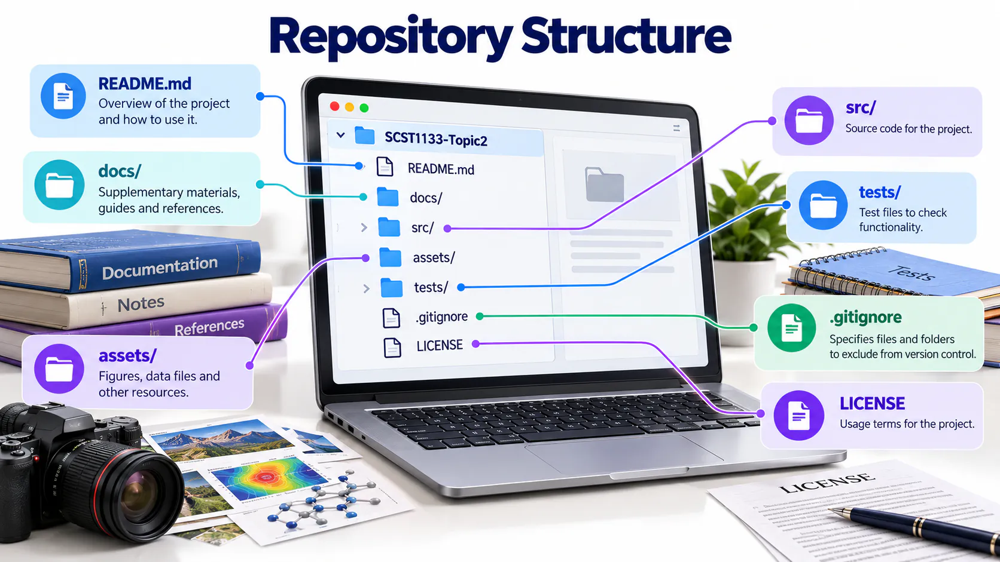
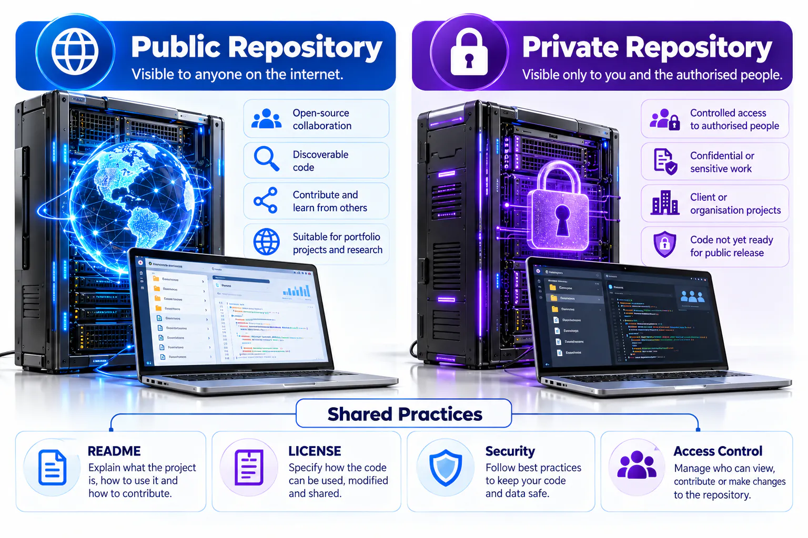
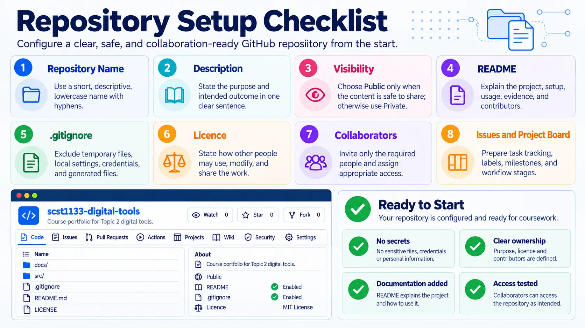

Your project’s home
GitHub stores project files online, records changes and supports collaboration. Git is the version-control system; GitHub is the online platform that hosts Git repositories.

How GitHub evolved
GitHub developed from a Git repository hosting service into a broader development platform supporting collaboration, automation, security, project management and software publishing. The timeline below helps distinguish the core version-control foundation from the services later added around it.

Understand repository structure
A well-organised repository helps another person locate the homepage, documentation, source files and supporting assets without guessing. Use descriptive folder names, place the README at the repository root and avoid unnecessary duplicate files.

Choose visibility deliberately
A public repository supports sharing and portfolio evidence, while a private repository restricts access to approved collaborators. Visibility does not replace security: passwords, tokens, personal records and confidential datasets must never be committed to either type.

Repository setup checklist
Before adding substantial work, confirm the repository name, description, visibility, README, licence, folder structure and initial security settings. A careful setup reduces avoidable restructuring later.

Learning objectives
- Explain the roles of Git, GitHub and a repository.
- Create a professional account, profile and public course repository.
- Document work with Markdown and meaningful commits.
- Use Issues, Projects, branches and pull requests for structured collaboration.
Workshop learning evidence
| Stage | What you should be able to show |
|---|---|
| Before | A verified account, professional username and secure sign-in method. |
| During | A repository, README, uploaded files, images and a visible commit history. |
| After | A collaborative change reviewed through a pull request and a short reflection. |
Key concepts
| Concept | Meaning |
|---|---|
| Repository | A project folder containing files and their history. |
| Commit | A recorded set of changes with a meaningful message. |
| Branch | An independent line of development. |
| README | The main documentation displayed on a repository page. |
| GitHub Pages | Hosting for static websites stored in a repository. |
Sign in or create an account
Open GitHub
Visit github.com and select Sign in. New users should select Sign up.
Authenticate
Enter your username or email and password, then complete any security verification.
Use a professional identity
Choose a clear username and add your full name, profile photo, institution, short bio, portfolio and LinkedIn URL.
Record your GitHub ID
Copy your username and update it through the SCST1133 Students page.
Create your course repository
Start a repository
Select New repository and use the name scst1133-digital-tools.
Configure it
Add the description “Digital tools activities for SCST1133 Data Engineering Ecosystem”, choose Public, and initialise it with a README.
Add information
Edit README directly, create a new file, or use Add file → Upload files. Preview Markdown before committing.
Commit clearly
Use messages such as “Add student profile”, “Create project homepage” or “Update Figma prototype link”.
Collaboration vocabulary
| Feature | Purpose |
|---|---|
| Issue | Records a task, question or problem with an owner and progress discussion. |
| Project | Organises Issues and pull requests into stages such as To Do, In Progress, Review and Done. |
| Branch | Keeps a proposed change separate from the stable version while work is in progress. |
| Pull request | Proposes that a branch be reviewed and merged into the main branch. |
| Review | Checks correctness, clarity and safety before accepting a change. |
| Merge | Combines an approved change into the main project history. |
Healthy workflow: describe the task in an Issue, move it across the Project board, work on a branch, open a pull request, review it, merge it and close the Issue.
Avoid weak commit messages: “update”, “test”, “aaa” and “final final” do not explain what changed.
Expected output
- A complete GitHub profile with a professional username.
- A public repository named scst1133-digital-tools.
- A README and at least two meaningful commits.